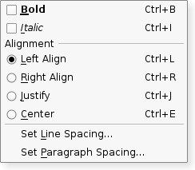

| Home · All Classes · Modules · QSS HELP · QSS 案例 · VER007 HOME |
该QActionGroup类群体诉讼在一起。More...
继承QObject。
该QActionGroup类群体诉讼在一起。
在某些情况下是非常有用的基QAction对象在一起。例如，如果你有一个Left Align动作，一Right Align动作，一Justify的动作，和一个Center动作，仅这些操作之一应该是活动在任何一个时间。实现这一目标的一个简单的方法是，把行动一起在一个行动小组。
下面是一个例子（从Menus为例）：
alignmentGroup = new QActionGroup(this);
alignmentGroup->addAction(leftAlignAct);
alignmentGroup->addAction(rightAlignAct);
alignmentGroup->addAction(justifyAct);
alignmentGroup->addAction(centerAct);
leftAlignAct->setChecked(true);
在这里，我们创建了一个新的动作组。由于行动组是独家默认情况下，只有一个组中的行动是在任何一个时间检查。

一个QActionGroup发出一个triggered（ ）当选择其行动一个信号。在一个行动组的每个动作发出的triggered（ ）信号如常。
如上所述，一个动作组exclusive默认情况下，它确保只有一个辨认的动作是活跃在任何一个时间。如果你想组可复动作而没有让他们独有的，你可以通过调用setExclusive （假）变成排他性的。
操作可以使用被添加到一个行动小组addAction（ ） ，但它通常是更方便的创建操作时指定一个组，这可以确保行动与父母自动创建。动作可以彼此进行目视分离，加入的分离器作用到基;创建一个动作，并使用QAction的setSeparator()功能使它被认为是分隔符。行动组添加到小部件与QWidget.addActions（）函数。
该parent的说法，如果不是没有，原因self通过Qt的，而不是PyQt的拥有。
构造一个行动小组的parent对象。
该行动小组是独家默认。呼叫setExclusive （ False）来使动作组非排他性。
返回该组的操作的列表。这可能是空的。
该a说法有它的所有权转移给Qt的。
添加action该组，并将其返回。
通常一个动作被添加到组与组为其父创建它，所以这个功能通常不使用。
See also QAction.setActionGroup（ ） 。
创建并返回一个动作与text。新创建的动作是这次行动组的孩子。
通常一个动作被添加到组与组作为父母创造它，所以这个功能通常不使用。
See also QAction.setActionGroup（ ） 。
创建并返回一个动作与text和icon。新创建的动作是这次行动组的孩子。
通常一个动作被添加到组与组为其父创建它，所以这个功能通常不使用。
See also QAction.setActionGroup（ ） 。
返回组，或0在当前检查行动，如果没有被选中。
该a争论
移除action从本组。该操作不会有任何父作为一个结果。
See also QAction.setActionGroup（ ） 。
这种方法也是一个Qt槽与C + +的签名void setDisabled(bool)。
这是一个方便的功能为enabled财产，那是非常有用的信号 - 槽连接。如果b是真正的行动组被禁用，否则将被启用。
这种方法也是一个Qt槽与C + +的签名void setEnabled(bool)。
这种方法也是一个Qt槽与C + +的签名void setExclusive(bool)。
这种方法也是一个Qt槽与C + +的签名void setVisible(bool)。
这是该信号的默认超载。
这个信号被发射给定的时action在行动组是由用户突出显示的，例如，当用户暂停使用光标移到菜单选项，工具栏按钮，或按下一个操作的快捷键组合。
See also QAction.activate（ ） 。
这是该信号的默认超载。
这是该信号的默认超载。
这个信号被发射给定的时action在行动组是由用户激活的，例如，当用户点击一个菜单选项，工具栏按钮，或按下一个操作的快捷键组合。
连接到这个信号的命令操作。
See also QAction.activate（ ） 。
| PyQt 4.10.3 for X11 | Copyright © Riverbank Computing Ltd and Nokia 2012 | Qt 4.8.5 |